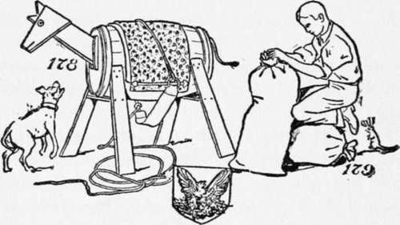
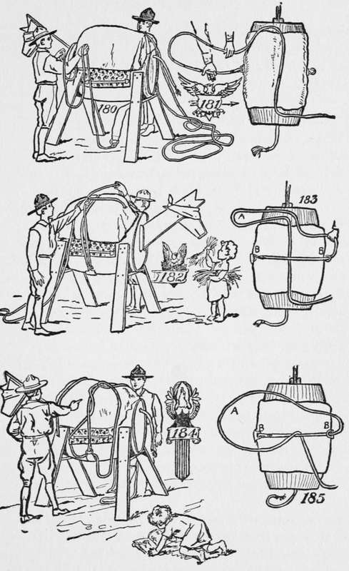
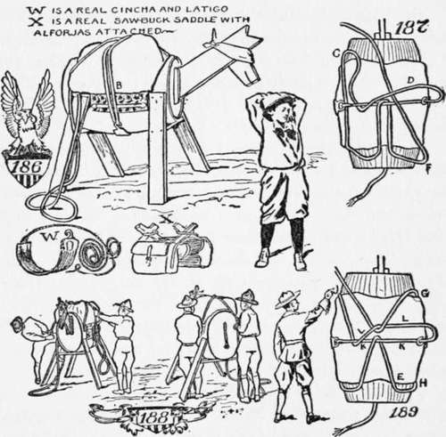
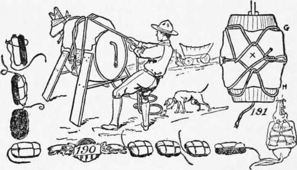

Even Boys Can Throw The Hitch
Description
This section is from the book "The Book Of Camp-Lore And Woodcraft", by Dan Beard. Also available from Amazon: The Book of Camp-Lore and Woodcraft.
Even Boys Can Throw The Hitch
Back in 1879, Captain A. B. Wood, United States Army, introduced a knowledge of the proper use of the pack saddle and the mysteries of the diamond hitch into the United States Army. The Fourth Cavalry, United States Army, was the first to become expert with the diamond hitch and taught it to the others; but recently a military magazine has asked permission, and has used the author's diagrams, to explain to the Cavalry men how this famous hitch is thrown.
It stands to reason that in order to pack one horse one must have some packs. But these are the easiest things imaginable to secure. A couple of old potato or flour bags, stuffed with anything that is handy—hay, grass, leaves, rags or paper—but stuffed tight (Fig. 179), will do for our load.
When packing a horse, except with such hitches as the "one man hitch," it requires two men or boys to " throw " the hitch. The first one is known as the head packer, and the other as the second packer. Remember that the left-hand side of the horse is the nigh side. The head packer stands on the nigh side of the horse and he takes the coiled lash rope in the left hand and lets the coils fall astern of the pack animal (Fig. 180); with the right hand he takes hold of the rope about three or four feet from the cincha (Fig. 180) and hands the hook end under the animal to the second packer, who stands on the right-hand side of the horse (Fig. 180). The right hand of the head packer, with the palm upwards, so holds the rope that the loop will fall across his forearm; the left hand with the palm downward holds the rope about half way between the loop that goes over the forearm and the loop that lies along the back of the pack animal (Fig. 181). The head packer now throws the loop from his forearm across the pack on the back of the animal, allowing the left hand to fall naturally on the neck of the animal. The second packer now runs the rope through the hook and pulls up the cincha end until the hook is near the lower edge of the off side of the aparejo (Fig. 183).
The head packer next grasps the rope A (Fig. 185) and tucks a loop from the rear to the front under the part marked B (Figs. 185 and 186), over the inner side pack (Figs. 184 and 187). Next the second packer passes the loose end of the rope under the part marked D (Fig. 187), and throws it on the nigh (left) side of the pack animals.
The head packer now draws the tucked loop forward and tucks it under the corners and the lower edge of the nigh side of the aparejo (Fig. 188), then holds it taut from the rear corner, and the second packer takes hold of the rope at E (Fig. 189) with his left hand, and at F (Fig. 187) with his right hand. He passes the rope under the corners and lower edge of the off side of the aparejo (G, H, Fig. 189, and G, H, Fig. 191). The second packer now takes the blind off his pack animal and is supposed to lead it forward a few steps while the head packer examines the load from the rear to see if it is properly adjusted.
Then the blind is again put upon the animal for the final tightening of the rope. While the second packer is pulling the parts taut, the head packer takes up the slack and keeps the pack steady. The tightening should be done in such a manner as not to shake the pack out of balance or position, (Figs. 188 and 190).
The second (or off side) packer grasps the lash rope above the hook, and puts his knee against the stern corner of the aparejo, left-hand group (Fig. 188). The head packer takes hold with his right hand of the same part of the rope where it comes from the pack on the inner side, and with the left hand at J (Fig. 189), and his right shoulder against the cargo to steady it, he gives the command "PULL!" Without jerks, but with steady pulls, the second packer now tightens the rope, taking care not to let it slip back through the hook. He gives the loose part to the head packer, who takes up the slack by steady pulls.
When the second packer is satisfied that it is all right he cries, "Enough!" The head packer then holds steady with his right hand and slips the other hand down to where the rope passes over the front edge of the aparejo. There he holds steady; his right hand then takes hold of the continuation of the rope at the back corner of the pad and pulls tight. Placing his right knee against the rear corner of the pad he pulls hard with both hands until the rope is well home, left-hand group (Fig. 188).
The second packer now takes up the slack by grasping the rope with both hands, E (Fig. 189).
The head packer steps to the front to steady the pack. The second packer pulls taut the parts on his side, taking up the slack. This draws the part of the lash rope K, K (Fig. 189), well back at middle of the pack, giving the center hitch the diamond shape from which the name is derived, X (Fig. 191). He then, with the left hand at the rear corner H, pulls taut and holds solid, while with the right hand in front of G, he takes up slack. Next with both hands at the front corner and with his knee against it (Fig. 188), the second packer pulls taut, the head packer at the same time taking up the slack on his side and then pulls steady, drawing the part L, L (Fig. 189), of the rope leading from the hook well forward at the middle of the pack, finishing off the diamond at X. He then carries the loose end under the corners and ends of the aparejo, and draws that taut and ties the end fast by a half hitch near the cincha end of the lash rope.
After passing under the corners, if the rope is long enough to reach over the load, it can then be passed over and made fast on the off side by tying around both parts of the lash rope above the hook and by drawing them well together (Fig. 191).
Alongside of Fig. 190 are a series of sketches showing how to lash and cinch two parcels or bags together; one bag is made black so that its position can better be understood. In other words, it makes it easier to follow the different hitches.
Learn to pack at home and you will not lose your packs on the trail.
In following these instructions, whenever in doubt forget the perspective views and keep in mind Figures 181, 183, 185, 187, 189 and 191, which tell the whole story. The perspective views are principally to show the relative position of the packers; the position of the rope can best be seen by looking on top of the pack.
In packing a live horse you will learn by practice not to pull in such a way as to cause the horse to step on your feet; you will also learn that a live horse will not stand as still as a wooden horse, but when you have learned to pack a wooden horse quickly and well, it will only take you a short time to become expert with a live horse.
Continue to: